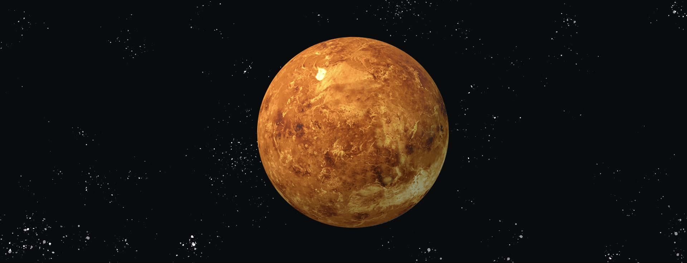

太阳系漫游的第六站是红色星球--火星。

火星｜MARS
太阳系漫游的第六站是红色星球--火星。
火星，是离太阳第四近的行星。欧洲古称火星为玛尔斯，也被称为“红色星球”。
古汉语中则因为它荧荧如火，位置、亮度时常变动让人无法捉摸而称之为荧惑。
图中的像是生了锈的大圆球，就是火星。
火星的 3D 模型，太阳系中的红色“战神”。
用鼠标拖动试试
Source: NASA Visualization Technology Applications and Development (VTAD)

质量：6.417×1023kg（地球质量的10.7%）
体积：1.632×1020m³（地球体积的15.1%）
与太阳的平均距离：2.279×108km（日地距离的1.52倍）
直径：4880 km
地表的温差:600℃